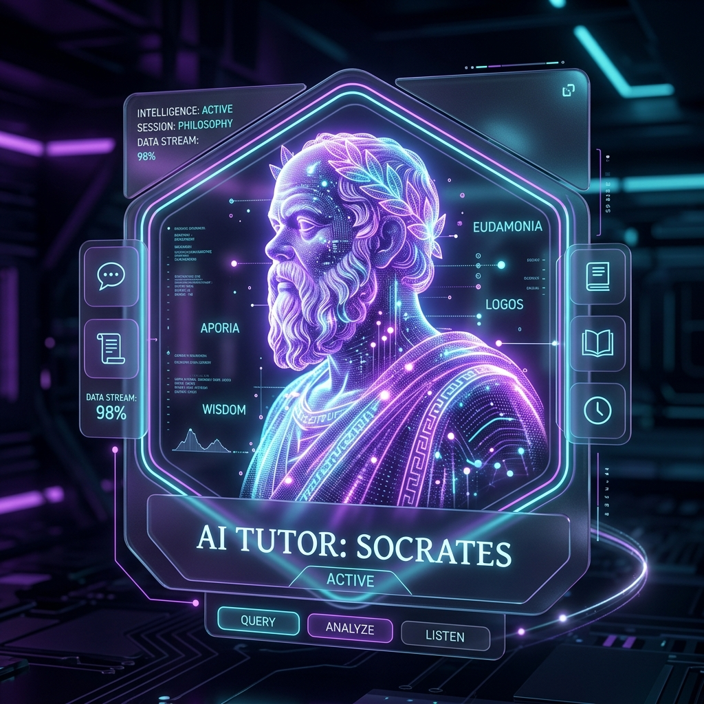
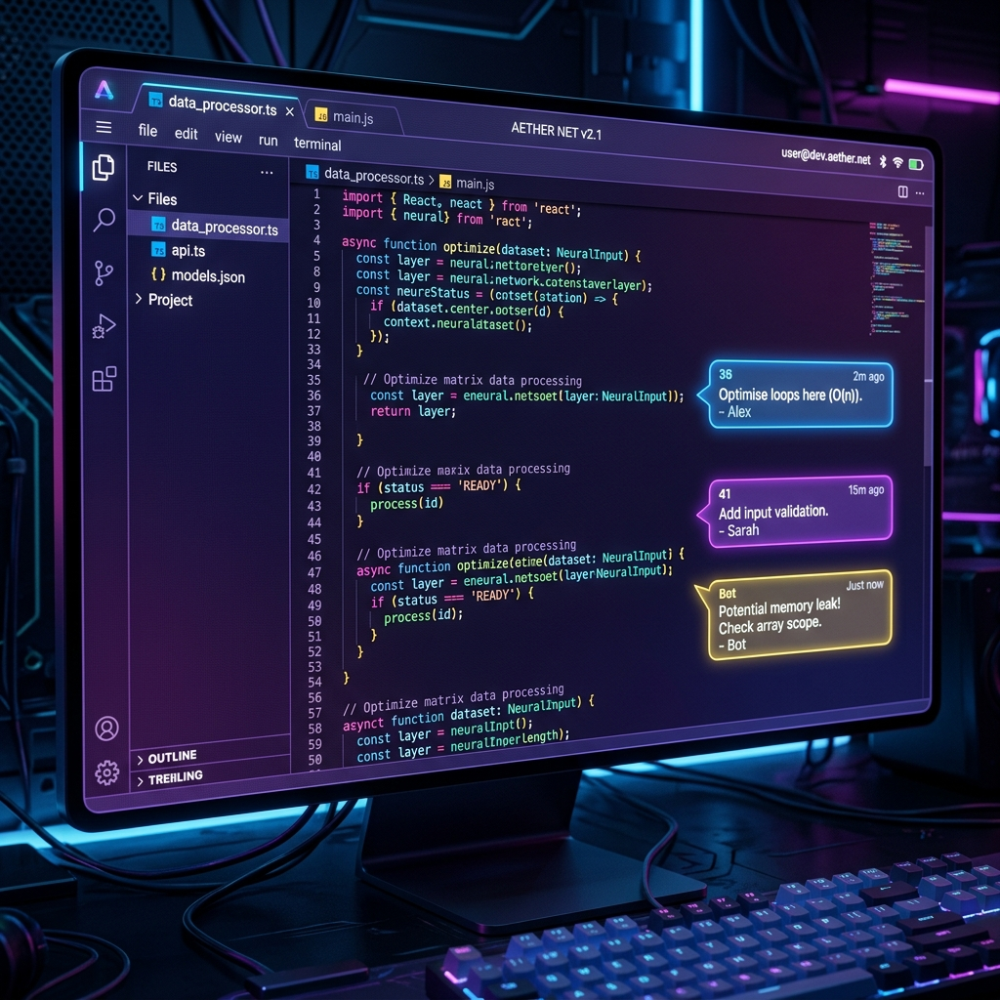

基于多智能体协作的资源生成与自适应个性化学习系统，打通“画像诊断-路径规划-资源生成-启发答疑-代码沙箱-效果评估”完整学业跃升闭环。
Kowell AI 学习工作赛道全国大赛官方提报内容，全景解析创意初心与核心价值。
Kowell AI — 基于多智能体协作的自适应智能学习与教研系统
在高等理工科专业教育阶段，大班授课制面临“一刀切”的教学进度限制，难以兼顾学生不同的起点与逻辑理解速度；同时，理论学习与实际写码实操严重割裂，本地开发环境的高配置门槛易劝退初学者；而一线教师面临极为繁重的教研备课负担，高质量一对一诊断和辅导资源稀缺昂贵。
灵感来源于大语言模型（如 DeepSeek-v4-pro、Claude-3.5 等）的推理能力以及多智能体（Multi-agent）并行协作工作流。我们结合自身理工科学习中遇到的代码报错无处求助、教研室助教备课重复劳动的痛点，希望利用多智能体网络，为学生打造一个“免配置、千人千面、伴随式”的 1v1 AI 教授，并为老师打造一个极速并发教研大纲与课件的利器。
Kowell AI 是一款面向高等教育阶段（本科、研究生、高职）理工科专业师生的高端自适应多智能体协作智能学习与教研 Web 系统。
平台利用多智能体异步并行生成引擎，将教师编制一套涵盖“讲义大纲 + SVG思维导图 + 经典测试题 + 示例源码”的传统教案准备时间，从 4 小时极限压缩至 45 秒，且支持一键 CRUD 版本管理，带来指数级的教研增效。
系统通过苏格拉底式的多轮提问，构建 6 维认知画像，动态激活有向无环图 (DAG) 自适应学习路线，免去了本地配置 8 种语言编译环境的痛苦；结合启发式数字人答疑，引导学生在错误中独立摸索成长，极大拉近了偏远地区和职业院校的师资差距。
打破理工科硬核学习的知行割裂，让优质的个性化因材施教惠及每位学子。
在高等教育硬核理工科（计算机、AI、电子）学习中，学生常面临“知行分离”与“缺乏规划”的痛点：理论知识抽象，大班授课进度一刀切，本地开发环境配置繁琐，遇到报错无人解答易被劝退；而专业老师则面临高昂的备课时间成本，难以针对每个学生的基础实施因材施教。
Kowell AI 核心架构的六个关键业务板块，基于高内聚低耦合的多智能体协作模式打造。

基于苏格拉底式对话的认知底盘检测，大模型以5-6轮循序渐进的答疑形式判断用户真实的数理及代码理解起点，杜绝“一刀切”授课。
将知识体系映射为有向无环图节点拓扑，通过前置关系约束阻断“跳级”学习，并依据认知评估动态更新后续学习拓扑权重。

多线程并发生成大纲、思维导图、随堂习题及源码，由 Claude 精准控噪排版，并支持一键 CRUD 操作及本地 Word/PPT 资源导出。
开箱即用的前端 Web Sandboxing 编程实验室，集成行级 Review 改错提示气泡，在 AST 层面为学生指出逻辑死循环与栈溢出风险。
实时量化学员的逻辑推理、实操编写、问题拆解、知识广度、学习毅力和理论基础，提供周度错题原因溯源及自适应能力演化路径。
集成了 MiniMax 极速语音合成技术，模拟电话连线的拟真波动波形动效，用户可随时打断 AI，降低指尖输入障碍，提升沟通拟真度。
社交邀请获赠积分，每日签到翻倍奖励，控制大模型调用成本，激发主动学习热情。
今日（23日）尚未打卡，点击对应日期完成签到，赚取今日积分！
签到即获积分，连续签到将触发积分翻倍系数。
新用户填写您的邀请码注册并绑定邮箱后，双方共享奖励。
在社群内分享已被沙箱安全编译且获得 AI 精英标记的代码案例。
点击下方 Tab 查看 Kowell AI 核心学习链条中各模块的交互模拟，体验多智能体协作细节。
就绪。点击右侧按钮模拟完整的“画像诊断-路径规划-资源生成-代码纠错-综合评估”协作流程。
经过本周 4 次 DAG 节点练习与 12 次沙箱测试，大模型生成了如下量化评级：
Kowell AI 核心由五个独立的智能体路由组成，它们通过统一的 JSON 状态机进行上下文同步与流式回传。
Prompt 策略：“扮演苏格拉底，不要直接给出代码，用追问启发学生指出思路缺陷，每轮对话后以 JSON 输出 6 维认知分。”
Prompt 策略：“输入当前用户的 6 维认知得分与目标章节，以 JSON Array 格式输出包含依存关系与权重排序的 DAG 拓扑图数组。”
Prompt 策略：“扮演理工科教授，生成包含讲义大纲、经典测验和思维导图的 Markdown 流，以 SSE 协议向客户端进行毫秒级流式回传。”
Prompt 策略：“作为行级代码审计专家，定位 Monaco 编辑器内的逻辑漏洞和时间复杂度瓶颈，仅输出行号与 Review 改错气泡提示。”
Kowell AI 填补了理工科专业课程在动手编程与自适应路线上的空白，兼备游戏化高粘性与智能教研提效。
| 对比维度 | Kowell AI (本产品) | 多邻国 (Duolingo) | 可汗学院 (Khan Academy) |
|---|---|---|---|
| 硬核理工科专业适配 | ✓ 深度适配 (支持计算机/算法/AI) | ✗ 无适配 (主要为语言/少儿数学) | ○ 局部适配 (仅限基础科学) |
| 代码实操在线沙箱 | ✓ 支持 (内置 Monaco 及行级 Code Review) | ✗ 无 | ○ 局部支持 (仅基础 JS 画图) |
| 自适应学习拓扑 | ✓ 动态 DAG (自适应生成拓扑节点) | ○ 线性关卡 (游戏化固定关卡) | ○ 静态树形 (不可动态变更) |
| 教研辅助生成 (B端) | ✓ 毫秒级生成 (大纲/课件/导图并支持导出) | ✗ 无此项功能 | ✗ 无此项功能 |
| 游戏化与裂变闭环 | ✓ 全方位 (日历签到+裂变代币分享机制) | ✓ 深度集成 (生命值与连胜体系) | ✗ 弱集成 (仅徽章收集) |
| 环境依赖度 | ✓ 免配置 (开箱即用，零环境依赖) | ✓ 免配置 | ✓ 免配置 |
Kowell AI 拥有雄厚的工程实现度，已完成全部基础组件研发，拒绝纸上谈兵。
经典的 "Freemium"（免费体验+多级套餐订阅）商业机制，覆盖各阶段用户需求。